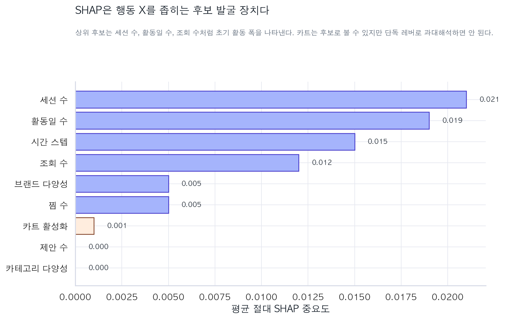
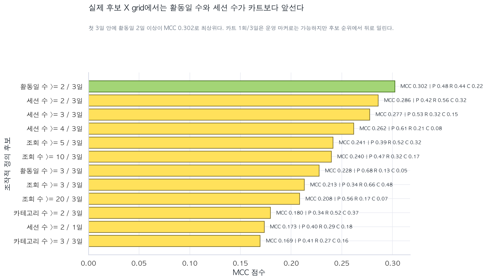
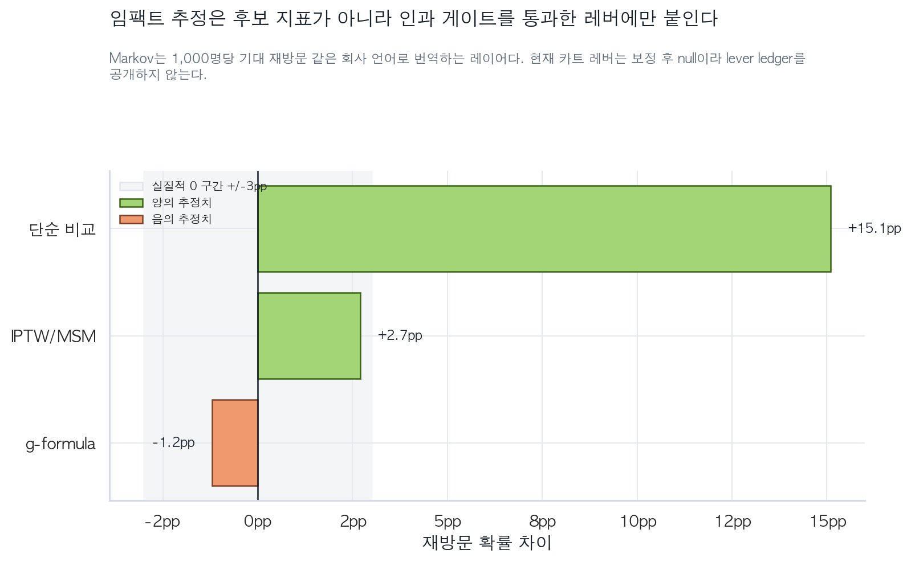

그로스 데이터 분석 · 리텐션 인과추론
초기 활동 폭이 재방문을 만든다: 카트 허영지표를 걷어낸 리텐션 실험 제안
Mercari 행동 로그를 사용해 신규 관측 유저의 재방문 후보 행동을 찾고, 관측 상관과 인과 추정을 분리해 실제 A/B 테스트 후보로 번역한 분석 케이스.
핵심 결론
카트는 리텐션 레버가 아니라 이미 인게이지된 유저의 마커다. 단순 비교에서는 카트 유저의 재방문이 +15.1pp 높지만, 인게이지먼트 폭을 보정하면 g-formula -1.2pp, IPTW +2.7pp로 실질적 0 구간에 들어온다.
따라서 이 프로젝트의 실행 제안은 카트 유도가 아니라 활동일 수 >= 2 / 3일을 늘리는 제품 실험이다. 첫날 이후 다시 올 이유를 만들어 두 번째 활동일을 확보하는 것이 더 방어 가능한 리텐션 가설이다.
실행 결정
프로덕션이 아니라 실험으로 넘긴다.
- 주 KPI: 엠바고 이후 14일 재방문
- 실험 후보: 활동일 수 >= 2 / 3일
- 처치 방향: 저장검색, 관심 카테고리 팔로우, 다음날 추천 피드, 가격변동 알림
- Guardrail: 구매의도 지표와 알림 피로도
한눈에 보는 핵심 수치
활동일 수 >= 2 / 3일
리텐션 유저 타겟 정확도
보정 후 null
base 0.080 대비 2배 이상
구매가 아니라 재방문을 묻는다
Mercari 로그에서 첫 구매는 첫 관측 시점 근처에 몰려 있어 리텐션 타깃으로 부적합했다. 그래서 분석 질문을 “누가 바로 구매하는가?”가 아니라 “초기 경험 후 다시 돌아오는 유저를 어떤 행동으로 만들 수 있는가?”로 재정의했다.
| KPI | 정의/비교 | 현재 판정 | 운영 의미 |
|---|---|---|---|
| 주 KPI | 피처 3일 + 엠바고 2일 이후 14일(t0+5~t0+19일) 안의 재방문 | 분석 타깃 확정 | A/B 테스트의 최종 성공 지표 |
| 후보 X | 활동일 수 >= 2 / 3일 | MCC 0.302 · lift 2.01 | 첫 실험 후보. 단, 관측 우위이므로 인과 확정 아님 |
| 배제 후보 | 첫 3일 내 카트 1회 이상 | 보정 후 null | 구매의도/획득 지표로 분리하고 리텐션 레버로 보고하지 않음 |
| 검증 기준 | late cohort holdout | PR-AUC 0.184 | 후보 발굴은 가능하나 실험으로 최종 검증 필요 |
리텐션 분석에서 자주 틀리는 지점을 먼저 막았다
이 리포트는 모델 성능 보고서가 아니라 의사결정 문서다. 그래서 카트의 큰 단순 lift를 그대로 실행하지 않고, 보정 후 null이라는 결론까지 끌고 간다. 분석은 다음 세 가지 함정을 먼저 통제했다.
피처 3일과 결과 14일 사이에 엠바고를 두고, gap sweep으로 PR-AUC plateau를 확인했다.
재방문과 이탈을 경쟁위험으로 모델링해 이탈 유저를 단순 비정보 검열로 취급하지 않았다.
SHAP과 아하 규칙은 후보 발굴용, g-formula/IPTW는 보정 진단용, 최종 효과는 A/B 테스트용으로 역할을 분리했다.
전략 프레임워크 — 지표를 고르는 분석이 아니라 실행 의사결정 시스템
엠바고 이후 재방문
SHAP으로 행동 후보 축소
X ≥ k within n days
precision · recall · MCC · coverage
g-formula · IPTW · Markov 번역
A/B 후보와 측정 계획
후보 X grid는 원본 임팩트 분석의 카트-only grid가 아니라, 원본 이벤트 테이블에서 활동일 수·세션 수·조회 수·카테고리 수·카트 수 5개 행동지표를 X >= k within n days로 다시 계산한 확장 grid다(아래 “운영 후보” 섹션). 따라서 카트 null 결론은 원본 인과 분석에서, 후보 1위 결론은 이 확장 grid에서 온다.
리텐션 신호는 카트가 아니라 초기 활동 폭이다
해저드 모델의 중요도는 카트보다 세션 수, 활동일 수, 조회 수에 집중된다. 이 결과는 “구매 의도가 있는 유저가 카트도 하고 다시 오는 것”과 “카트를 시키면 다시 온다”를 구분해야 한다는 신호다.

SHAP은 원인 증명이 아니라 후보 압축 장치다. 여기서 도출한 후보는 반드시 조작 가능한 제품 개입으로 다시 정의해야 한다.
“첫날 한 번 담기”보다 “다음 날 다시 들어와 둘러볼 이유 만들기”가 리텐션 실험으로 더 자연스럽다.
운영 후보는 활동일 수 >= 2 / 3일이다
후보 행동을 `X >= k within n days`로 바꿔 비교했다. 불균형 라벨에서 precision, recall, coverage 중 하나만 고르면 왜곡되므로 MCC를 정렬 기준으로 사용했다.

precision 0.485 · recall 0.442 · MCC 0.302 · coverage 22.0%
precision 0.419 · recall 0.557 · MCC 0.286 · coverage 32.1%
precision 0.527 · recall 0.322 · MCC 0.277 · coverage 14.7%
precision 0.614 · recall 0.211 · MCC 0.262 · coverage 8.3%
카트 lift는 실행하면 안 되는 허영지표다
카트는 단순 비교에서 +15.1pp로 좋아 보인다. 하지만 인게이지먼트 폭을 보정하면 효과가 0 근처로 붕괴한다. 이 차이를 보여주는 것이 이 프로젝트의 핵심 가치다.

“카트율을 올리면 재방문이 오른다”는 주장은 현재 데이터로 방어할 수 없다.
“초기 활동 폭이 넓은 유저는 재방문 가능성이 높다. 이를 실험 후보로 검증하자”는 주장은 방어 가능하다.
두 번째 활동일을 만드는 실험
분석 결과를 제품 과제로 번역하면 “첫날 이후 다시 방문할 이유를 심는 것”이다. 실험은 지표를 올리는지보다 재방문을 실제로 올리는지를 봐야 한다.
한계와 가정
MerRec은 관측 데이터라 실제 A/B 테스트를 수행한 데이터셋이 아니다. 따라서 이 보고서의 완성 지점은 “효과 확정”이 아니라 “A/B 테스트로 검증할 후보 X와 측정 설계”다. g-formula와 IPTW는 순차적 교환가능성, positivity, consistency 가정에 의존하므로 실험을 대체하지 못한다. Markov 체인도 임팩트 번역에는 유용하지만 인과 식별 장치가 아니다.
또한 원본 드라이버 리포트의 카트 grid와 이 보고서의 확장 후보 grid는 역할이 다르다. 카트 null 결론은 원본 임팩트 분석에서, 활동일 수 >= 2 / 3일 후보 결론은 원본 이벤트 테이블에서 재계산한 확장 grid에서 온다.